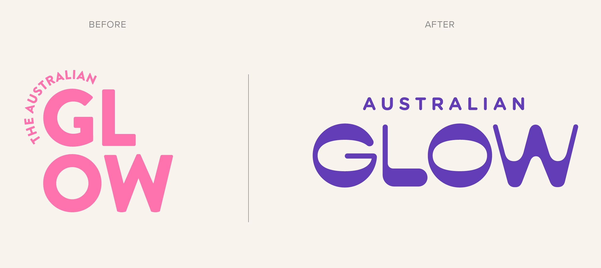
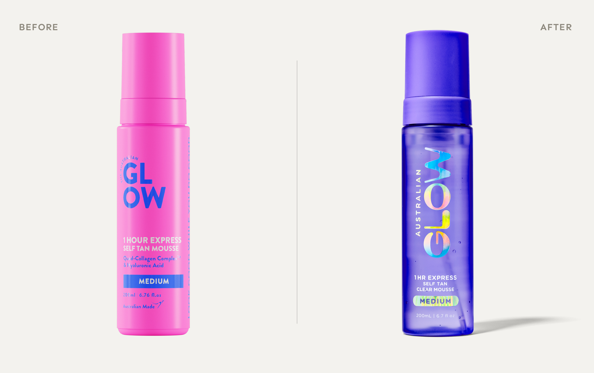

Australian Glow had a confident product and a loyal following. The brief: make the brand work harder on shelf, packaging distinctive enough to read across Priceline, Myer, Big W and Amazon, a range deep enough to earn a proper planogram section, and an identity that stopped imitating premium beauty and started owning its actual category.
The challenge: mass beauty without the mass-beauty look
Self-tan lives in a category that always looks the same: polished bottles, restrained typography, tasteful gradients. The category code says premium; the shopper sees same. Australian Glow needed an identity that looked nothing like the rest of the bay, and packaging confident enough to be picked up at three metres.

The insight: don’t dress like the category, own the product promise
Most self-tan brands sell aspiration. Morice & Co did the opposite. The promise of an Australian glow isn’t aspirational, it’s everyday, sun-kissed, unapologetic. So the system was built around that: distinctive bottle architecture per SKU, in chrome, cobalt and cyan, each signalling its role before the shopper picks it up.
The process: build the range, not just the hero
Six products were architected, each owning a clear role: 1Hr Express, Express Clear, Face Tan Drops, Platinum Maximum, Gradual Moisturiser and the Blend & Slay Mitt, enough depth to earn a proper planogram section and enough distinctiveness that the brand never reads the same as anything beside it.
“Self-tan didn’t need another premium imitation. It needed a brand confident enough to look different. The range did the heavy lifting on shelf. The identity did the heavy lifting in the shopper’s memory.”
The outcome
The result is a self-tan brand that looks nothing like the bay it sits in, colour-coded bottle architecture, a range built to earn its own planogram section, and an identity that does the heavy lifting in the shopper’s memory.
A Morice & Co project. This study shows the design transformation; we don’t publish third-party commercial figures.